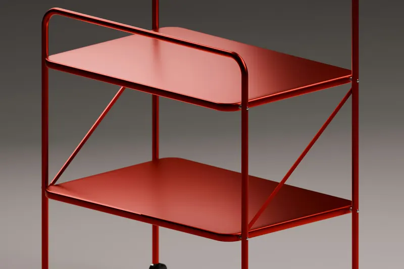

Sector
Chapa para mobiliario y señalética
Estantes, estructuras, placas, rótulos y tótems: el mobiliario de chapa necesita cantos limpios y cotas que encajen. Lo cortamos por láser en el material que elijas.

- Piezas
- Estructuras, estantes, placas
- Espesor
- Hasta 6 mm
- Prototipo
- Desde una unidad
- Fabrica
- Planta desde 1942
Qué fabricamos
- Estantes, bandejas y desarrollos de estructuras que se pliegan después.
- Placas, rótulos y letras recortadas.
- Tótems y señalética de exterior.
- Piezas de mobiliario para retail y oficina.
Oficio de fabricante de mobiliario
La planta que está detrás de Cortelaser fabrica productos de chapa y mobiliario urbano: piezas que tienen que quedar bien a la vista y durar años. Ese oficio es el que aplicamos al corte de tus piezas: cantos limpios y cotas que encajan.
Piensa en el acabado
Del prototipo a la serie
Empieza con una unidad para validar el diseño, ajusta lo que haga falta y pide la serie con el mismo programa. No hay utillaje que amortizar entre una cosa y otra.
Preguntas frecuentes
¿Las piezas salen pintadas?
No. Cortelaser solo hace corte láser: las piezas salen planas y sin pintar.
¿Podéis hacer letras recortadas?
Sí, siempre que las islas interiores (el centro de la O, la A…) vayan unidas con puentes o en tipografía stencil.